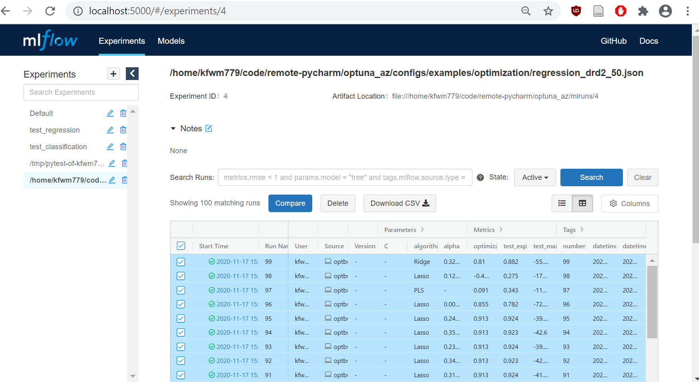
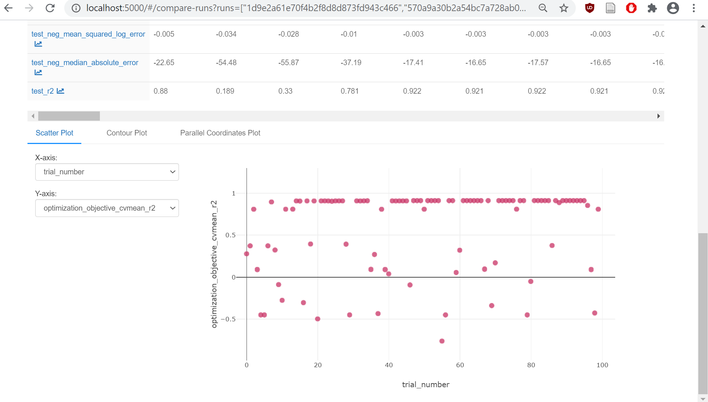

QSARtuna 𓆛: QSAR using Optimization for Hyperparameter Tuning (formerly Optuna AZ and QPTUNA)
Build predictive models for CompChem with hyperparameters optimized by Optuna.
Developed with Uncertainty Quantification and model explainability in mind.
Background
This library searches for the best ML algorithm and molecular descriptor for the given data.
The search itself is done using Optuna.
Developed models employ the latest state-of-the-art uncertainty estimation and explainability python packages
Further documentation in the GitHub pages here.
QSARtuna Publication available here.
The three-step process
QSARtuna is structured around three steps:
Hyperparameter Optimization: Train many models with different parameters using Optuna. Only the training dataset is used here. Training is usually done with cross-validation.
Build (Training): Pick the best model from Optimization, and optionally evaluate its performance on the test dataset.
“Prod-build:” Re-train the best-performing model on the merged training and test datasets. This step has a drawback that there is no data left to evaluate the resulting model, but it has a big benefit that this final model is trained on the all available data.
JSON-based Command-line interface
Let’s look at a trivial example of modelling molecular weight using a training set of 50 molecules.
Configuration file
We start with a configuration file in JSON format. It contains four main sections:
data - location of the data file, columns to use.
settings - details about the optimization run.
descriptors - which molecular descriptors to use.
algorithms - which ML algorithms to use.
Below is the example of such a file
{
"task": "optimization",
"data": {
"training_dataset_file": "tests/data/DRD2/subset-50/train.csv",
"input_column": "canonical",
"response_column": "molwt"
},
"settings": {
"mode": "regression",
"cross_validation": 5,
"direction": "maximize",
"n_trials": 100,
"n_startup_trials": 30
},
"descriptors": [
{
"name": "ECFP",
"parameters": {
"radius": 3,
"nBits": 2048
}
},
{
"name": "MACCS_keys",
"parameters": {}
}
],
"algorithms": [
{
"name": "RandomForestRegressor",
"parameters": {
"max_depth": {"low": 2, "high": 32},
"n_estimators": {"low": 10, "high": 250},
"max_features": ["auto"]
}
},
{
"name": "Ridge",
"parameters": {
"alpha": {"low": 0, "high": 2}
}
},
{
"name": "Lasso",
"parameters": {
"alpha": {"low": 0, "high": 2}
}
},
{
"name": "XGBRegressor",
"parameters": {
"max_depth": {"low": 2, "high": 32},
"n_estimators": {"low": 3, "high": 100},
"learning_rate": {"low": 0.1, "high": 0.1}
}
}
]
}
Data section specifies location of the dataset file.
In this example it specifies a relative path to the tests/data folder.
Settings section specifies that:
we are building a regression model,
we want to use 5-fold cross-validation,
we want to maximize the value of the objective function (maximization is the standard for scikit-learn models),
we want to have a total of 100 trials,
and the first 30 trials (”startup trials”) should be random exploration (to not get stuck early on in one local minimum).
We specify two descriptors and four algorithm, and optimization is free to pair any specified descriptor with any of the algorithms.
When we have our data and our configuration, it is time to start the optimization.
Running via singulartity
QSARtuna can be deployed using Singularity container.
To run commands inside the container, Singularity uses the following syntax:
singularity exec <container.sif> <command>
We can run three-step-process from command line with the following command:
singularity exec /projects/cc/mai/containers/QSARtuna_latest.sif \
/opt/qsartuna/.venv/bin/qsartuna-optimize \
--config examples/optimization/regression_drd2_50.json \
--best-buildconfig-outpath ~/qsartuna-target/best.json \
--best-model-outpath ~/qsartuna-target/best.pkl \
--merged-model-outpath ~/qsartuna-target/merged.pkl
Since optimization can be a long process, we should avoid running it on the login node, and we should submit it to the SLURM queue instead.
Submitting to SLURM
We can submit our script to the queue by giving sbatch the following script:
#!/bin/sh
#SBATCH --nodes=1
#SBATCH --ntasks=1
#SBATCH --cpus-per-task=5
#SBATCH --mem-per-cpu=4G
#SBATCH --time=100:0:0
#SBATCH --partition core
# This script illustrates how to run one configuration from QSARtuna examples.
# The example we use is in examples/optimization/regression_drd2_50.json.
# The example we chose uses relative paths to data files, change directory.
cd /{project_folder}/OptunaAZ-versions/OptunaAZ_latest
singularity exec \
/{project_folder}/containers/QSARtuna_latest.sif \
/opt/qsartuna/.venv/bin/qsartuna-optimize \
--config{project_folder}/examples/optimization/regression_drd2_50.json \
--best-buildconfig-outpath ~/qsartuna-target/best.json \
--best-model-outpath ~/qsartuna-target/best.pkl \
--merged-model-outpath ~/qsartuna-target/merged.pkl
When the script is complete, it will create pickled model files inside your home directory under ~/qsartuna-target/.
Using the model
When the model is built, run inference:
singularity exec /{project_folder}/containers/QSARtuna_latest.sif \
/opt/qsartuna/.venv/bin/qsartuna-predict \
--model-file target/merged.pkl \
--input-smiles-csv-file tests/data/DRD2/subset-50/test.csv \
--input-smiles-csv-column "canonical" \
--output-prediction-csv-file target/prediction.csv
Note that QSARtuna_latest.sif points to the most recent version of QSARtuna.
Legacy models require the inference with the same QSARtuna version used to train the model.
This can be specified by modifying the above command and supplying
/projects/cc/mai/containers/QSARtuna_<version>.sif (replace
E.g:
singularity exec /{project_folder}/containers/QSARtuna_2.5.1.sif \
/opt/qsartuna/.venv/bin/qsartuna-predict \
--model-file 2.5.1_model.pkl \
--input-smiles-csv-file tests/data/DRD2/subset-50/test.csv \
--input-smiles-csv-column "canonical" \
--output-prediction-csv-file target/prediction.csv
would generate predictions for a model trained with QSARtuna 2.5.1.
Optional: inspect
To inspect performance of different models tried during optimization, use MLFlow Tracking UI:
module load mlflow
mlflow ui
Then open mlflow link your browser.

If you run mlflow ui on SCP,
you can forward your mlflow port
with a separate SSH session started on your local (”non-SCP”) machine:
ssh -N -L localhost:5000:localhost:5000 user@login.intranet.net
(”-L” forwards ports, and “-N” just to not execute any commands).
In the MLFlow Tracking UI, select experiment to the left, it is named after the input file path. Then select all runs/trials in the experiment, and choose “Compare”. You will get a comparison page for selected runs/trials in the experiment.

Comparison page will show MLFlow Runs (called Trials in Optuna), as well as their Parameters and Metrics. At the bottom there are plots. For X-axis, select “trial_number”. For Y-axis, start with “optimization_objective_cvmean_r2”.
You can get more details by clicking individual runs. There you can access run/trial build (training) configuration.
Run from Python/Jupyter Notebook
Create conda environment with Jupyter and Install QSARtuna there:
module purge
module load Miniconda3
conda create --name my_env_with_qsartuna python=3.10.10 jupyter pip
conda activate my_env_with_qsartuna
module purge # Just in case.
which python # Check. Should output path that contains "my_env_with_qsartuna".
python -m pip install https://github.com/MolecularAI/QSARtuna/releases/download/3.1.0/qsartuna-3.1.0.tar.gz
Then you can use QSARtuna inside your Notebook:
from qsartuna.three_step_opt_build_merge import (
optimize,
buildconfig_best,
build_best,
build_merged,
)
from qsartuna.config import ModelMode, OptimizationDirection
from qsartuna.config.optconfig import (
OptimizationConfig,
SVR,
RandomForest,
Ridge,
Lasso,
PLS,
XGBregressor,
)
from qsartuna.datareader import Dataset
from qsartuna.descriptors import ECFP, MACCS_keys, ECFP_counts
##
# Prepare hyperparameter optimization configuration.
config = OptimizationConfig(
data=Dataset(
input_column="canonical",
response_column="molwt",
training_dataset_file="tests/data/DRD2/subset-50/train.csv",
),
descriptors=[ECFP.new(), ECFP_counts.new(), MACCS_keys.new()],
algorithms=[
SVR.new(),
RandomForest.new(),
Ridge.new(),
Lasso.new(),
PLS.new(),
XGBregressor.new(),
],
settings=OptimizationConfig.Settings(
mode=ModelMode.REGRESSION,
cross_validation=3,
n_trials=100,
direction=OptimizationDirection.MAXIMIZATION,
),
)
##
# Run Optuna Study.
study = optimize(config, study_name="my_study")
##
# Get the best Trial from the Study and make a Build (Training) configuration for it.
buildconfig = buildconfig_best(study)
# Optional: write out JSON of the best configuration.
import json
print(json.dumps(buildconfig.json(), indent=2))
##
# Build (re-Train) and save the best model.
build_best(buildconfig, "target/best.pkl")
##
# Build (Train) and save the model on the merged train+test data.
build_merged(buildconfig, "target/merged.pkl")